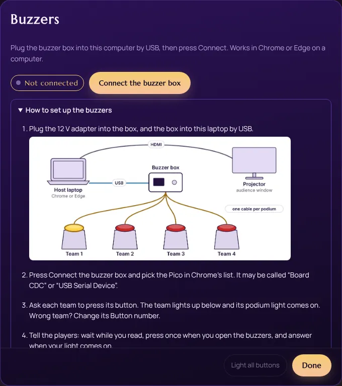
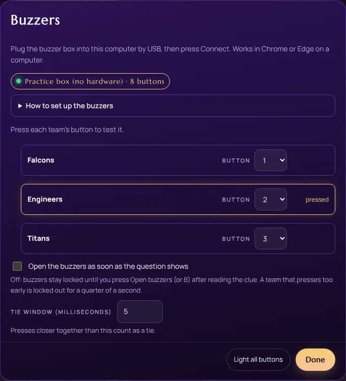
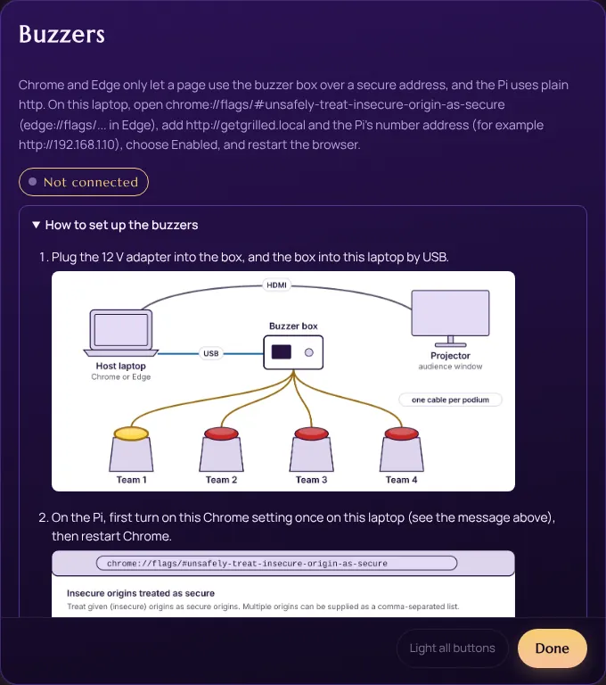
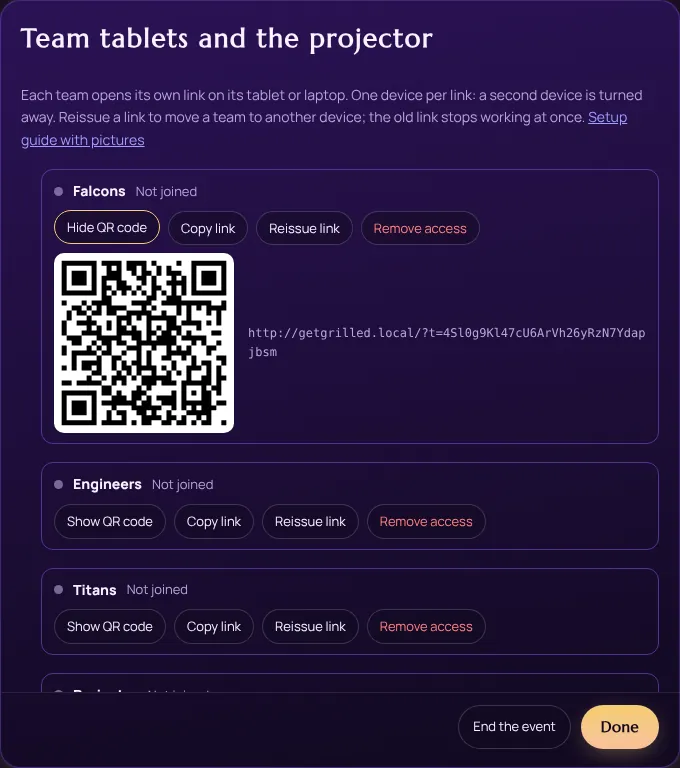
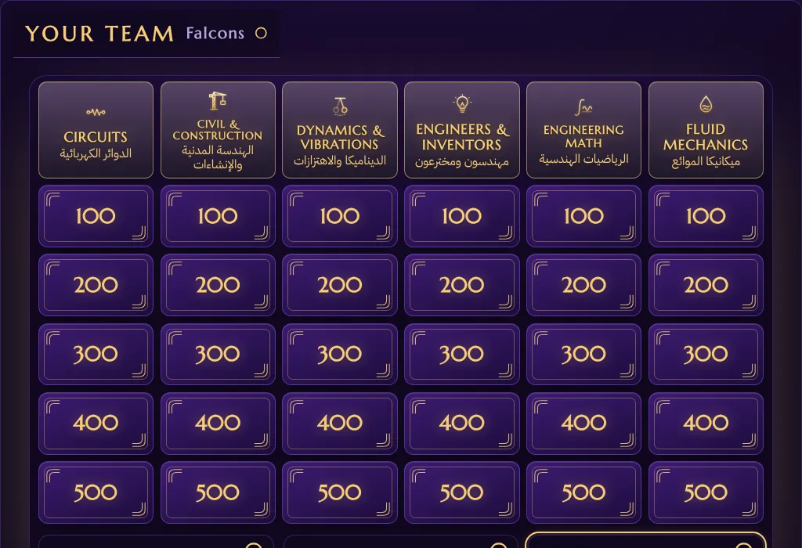
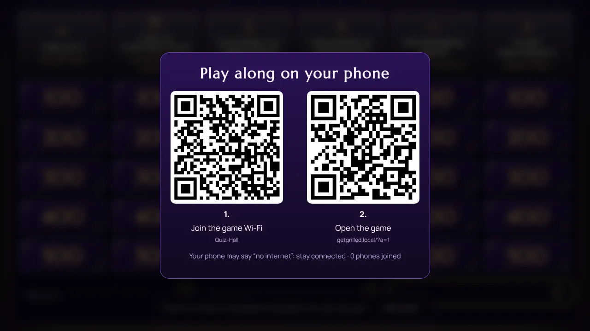
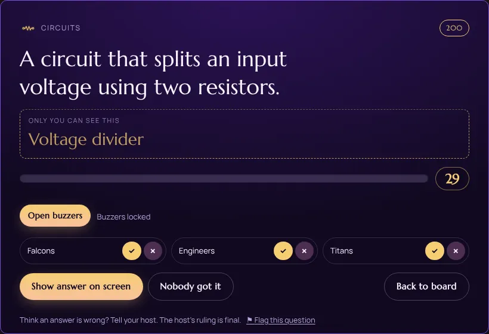
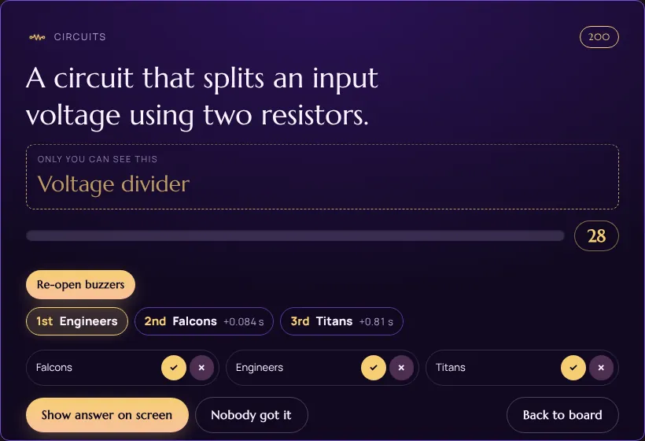

Large light-up buttons show the room which team pressed first, so every team gets a fair turn. This guide takes you from a box of parts to a working game, with pictures for each step.
Not tried on real hardware yet. The box program and the game have been tested with a practice box in the browser, but nobody has built this box or run it on a real Raspberry Pi so far. Build it well before the event and do a full rehearsal with every podium.
The buzzer box always plugs into the host’s laptop by USB, whichever way you run the game. Choose one of these two set-ups.
A. Laptop and projector
The host runs Munaafasatul Ilm in Chrome or Edge on a laptop, with the projector showing the audience window. No Raspberry Pi needed. Do parts 2 to 5 and 7.
B. Live on a Raspberry Pi
The Pi runs the game on its own Wi-Fi, so team tablets, the projector and audience phones all follow along. Do every part.
Set-up A. The box sends each press to the laptop; the projector shows the order.Set-up B. The Pi is plugged into your router by cable. Everything else joins the router. The buzzer box still plugs into the host laptop.
2Get the parts
For whoever builds the box. The list is for 4 teams. For each extra team (up to 8), add one button, one cable and one 4.7 kΩ resistor and 100 nF capacitor.
Buzzer box
Part
Qty
Notes
Raspberry Pi Pico or Pico 2, with headers
1
The W (wireless) versions work too.
100 mm arcade push button with built-in light, 12 V
4
One per podium. 5 V versions also work (see the note in part 3).
ULN2803A driver chip (DIP-18) and socket
1
Lets the Pico switch the 12 V lights.
12 V 2 A power adapter and DC socket
1
For the lights only.
4.7 kΩ resistor
4
One per button, for long cables.
100 nF ceramic capacitor
4
One per button, filters noise on long cables.
Small push button
1
Optional: a Reset button on the box for the host.
CAT6 network cable, with RJ45 sockets or screw terminals
1 per podium
Up to about 15 m each. Lengths don’t need to match.
Project box, perfboard, wire, USB cable for the Pico
1
Use a USB cable that carries data, not a charge-only one.
Only for set-up B (Raspberry Pi)
Part
Qty
Notes
Raspberry Pi 5 (4 GB is plenty) and its power supply
1
microSD card, 32 GB or larger
1
A card of its own for this game.
Wi-Fi router of your own
1
WPA3 if you can. Needs internet only before the event, for updates.
Network cables
2
Pi to router, and ideally host laptop to router.
3Build the buzzer box
For whoever builds the box. Unplug the 12 V adapter and the USB cable while you solder.
button wireslight wirespowerground
The Pico seen from above, USB socket at the top. Pin numbers are printed small beside each pin. Team 1 uses GP2 and GP10, team 2 uses GP3 and GP11, and so on.One podium, fully wired (team 1). Repeat for each team with the next pins: the resistor, capacitor and button go on the next GP pin from GP3 to GP9, and the light on the next driver channel.The ULN2803A driver from above. Find the notch at one end: pin 1 is to its left. Fit it in a socket so you can swap it.
Buttons. Wire each team’s button between its GP pin (GP2 for team 1 up to GP9 for team 8) and GND. Add one 4.7 kΩ resistor from that GP pin to 3V3(OUT) (pin 36), and one 100 nF capacitor from that GP pin to GND.
Lights. Connect GP10 to GP17 to driver pins 1 to 8. Driver outputs (pins 18 down to 11) go to the minus side of each team’s light. The plus side of every light and driver pin 10 (COM) go to +12 V.
Ground. Join the Pico’s GND, driver pin 9 and the adapter’s minus. Every ground must meet.
Podium cables. Use one CAT6 cable per podium: one twisted pair for the button, one pair for its light. Label both ends with the team number.
Reset (optional). A small button from GP18 to GND lets the host clear the buzz order from the box.
5 V lights: use the Pico’s VBUS (pin 40, 5 V from USB) instead of the 12 V adapter, and keep all lights together under about 400 mA.
4Put the program on the box
Once per box, on any computer.
The four steps below, in pictures.
Hold the small BOOTSEL button on the Pico while you plug it into a computer. It shows up as a drive called RPI-RP2 (or RP2350 for a Pico 2).
Download MicroPython for your board from micropython.org (Raspberry Pi Pico, or Pico 2) and drag the .uf2 file onto that drive. The Pico restarts.
Install Thonny (thonny.org), open it, and choose MicroPython (Raspberry Pi Pico) at the bottom right. Open buzzer/firmware/main.py from the Munaafasatul Ilm code on GitHub (furanite/ilm-munaafasah), then File → Save as… → Raspberry Pi Pico, named main.py.
Close Thonny (it keeps the USB port busy), then unplug and replug the Pico. Its own small light comes on: the program is running.
5Connect and test each team
For the host, before every event. Use Chrome or Edge on a laptop or desktop. Safari, Firefox, iPads and phones can’t talk to USB devices.
The Buzzers button is in the top bar. Its dot turns green when the box is connected.
Plug in the 12 V adapter, then plug the box into the host laptop by USB.
Open Munaafasatul Ilm, set up your game, then press Buzzers and Connect the buzzer box. Chrome shows a list of devices: pick the Pico (it may be called “Board CDC” or “USB Serial Device”). Chrome remembers it, so next time it connects by itself.
Ask each team to press its button. The matching team lights up in the panel, its podium light comes on, and its daff sound plays.
If a press lights the wrong team, change the Button number next to that team. The two teams swap, so no button is used twice.
Press Light all buttons to check every light at once.

Before connecting: press Connect the buzzer box.

Testing: Huda pressed button 2. (This picture uses the practice box, so the status says “Practice box”. With the real box it says “Connected · 8 buttons”.)
Two settings in the same panel
Open the buzzers as soon as the question shows. Leave it off for a fair game: buzzers stay locked until you have read the clue.
Tie window. Presses closer together than this (5 milliseconds to start with) show as a tie.
Rehearse without the box: add ?buzzsim=1 to the end of the game’s address. A practice box appears, and you can press team buttons from the browser console with ggBuzz.press(0) for team 1, ggBuzz.press(1) for team 2, and so on.
6Live on the Raspberry Pi
Only for set-up B. The first time takes about an hour, mostly waiting.
Its own card. Munaafasatul Ilm lives on its own microSD card. If you also run Get Grilled, use the same Pi with two cards and swap them while the Pi is switched off.
The router
Give the Wi-Fi a name and a strong password, and choose WPA3 if offered. If the router has only WPA2, plug the host laptop into the router by cable.
Turn on client isolation (also called AP isolation) so phones can’t reach each other. Don’t use the separate guest network: it often blocks the Pi too.
Change the router’s admin password, and turn off WPS and remote management.
Once the Pi has joined, give it a fixed address (an “address reservation” in the router’s DHCP settings) so links and QR codes keep working.
The Pi’s card and the installer
On your computer, open Raspberry Pi Imager, choose Raspberry Pi OS Lite (64-bit), and in its settings set a user name, a strong password and your time zone, and turn on SSH. Leave the Pi’s Wi-Fi empty: it uses the cable.
Put the card in the Pi, plug the Pi into the router by cable, and switch it on. Then, on the Pi (keyboard and screen, or SSH), run:
The installer asks for the Wi-Fi name and password (they go on the projector’s join card as a QR code) and the update key. On your first Pi choose 1: it shows a private key once. Copy it into GitHub under Settings → Secrets and variables → Actions → New repository secret, named PI_SIGNING_KEY.
On GitHub, open Actions → Raspberry Pi release → Run workflow once. Then back on the Pi:
$ ilm update # fetches and checks the newest release$ ilm pin # choose the host PIN (6 to 12 digits)$ ilm status # shows the version and the Pi's address
The installer turns SSH off at the end. To keep it, run sudo bash pi/install.sh --keep-ssh. It is safe to run the installer again.
Let the host laptop use the box on the Pi
Chrome and Edge only let a page use a USB device over a secure address, and the Pi uses plain http. Change this once on the host laptop.
A drawing of the setting in Chrome. In Edge, open edge://flags and search for the same name.
Open chrome://flags/#unsafely-treat-insecure-origin-as-secure.
In the box, type http://ilm.local, a comma, and the Pi’s number address from ilm status (for example http://192.168.1.10).
Choose Enabled, then Relaunch. Now connect and test the box as in part 5.

Before the change, the Buzzers panel shows this message instead of the Connect button.
Connect the screens on the day
Switch on the router, then the Pi. The game starts by itself within a minute.
On the host laptop, open http://ilm.local/host/ and sign in with the PIN. If the name doesn’t open, use the address from ilm status.
Set up the game, then press Devices. Each team gets a link and QR code: scan it with that team’s tablet. Open the Projector link on the projector’s computer. One device per link: if a team needs a different tablet, press Reissue link.
For the audience, tick Let the audience play along on their phones and Show the join QR code on the projector. Untick the QR code once people are in.
Afterwards, press End the event to stop every link.

Devices: Noor’s QR code is open. Each team’s dot turns green when its tablet is online.

A team tablet: the board, the team’s name, and “Your pick!” on its turn.

The projector’s join card for the audience: first the Wi-Fi, then the game. (Example Wi-Fi name.)
7During the game
For the host
Open a clue and read it out. The buzzers stay locked.
Press Open buzzers or the B key. A team that presses before that is locked out for a quarter of a second.
The order appears on the clue card and on the projector, with the gap after the first team. The first team’s light comes on and its own daff sound plays through the hall speakers.
Mark the team right or wrong. After a wrong answer, the next team’s light comes on.
After a tie, or to start again, press Re-open buzzers (or the Reset button on the box).

While you read: Buzzers locked.

After pressing B: Huda were first, Noor 0.084 s later.
For players · read this out before the first round
Wait, press, answer.
Keep your hands off the button while the host reads. Pressing early locks your team out for a quarter of a second.
When the host opens the buzzers, press once. Pressing again changes nothing.
If your light comes on, it is your turn. Answer when the host points to you.
The screen shows the order down to the thousandth of a second. Teams within the tie window show TIE, and the host re-opens the buzzers.
Cable lengths don’t matter: a press reaches the box in well under a millionth of a second, even from 15 m away.
8If something goes wrong
What you see
What to try
No Buzzers button in the top bar
Use Chrome or Edge on a laptop or desktop. Safari, Firefox, iPads and phones can’t reach USB devices.
The panel talks about a “secure address”
You are on the Pi’s address. Make the Chrome change in part 6, then relaunch the browser.
The Pico isn’t in Chrome’s list
Close Thonny. Try another USB cable (some only charge). Check the Pico’s own light is on; if not, put main.py on it again (part 4).
Status says Connection lost
Check the USB cable, unplug and replug the box, then press Connect the buzzer box.
One button does nothing in the test
Check its wire at the GP pin and at GND, and its 4.7 kΩ resistor. Swap its cable with a working podium to find whether the cable or the button is at fault.
The wrong team lights up
Change the Button number next to each team in the Buzzers panel.
Presses work but a light stays off
Is the 12 V adapter plugged in? Check the driver chip is the right way round (notch), pin 10 goes to +12 V, pin 9 to ground, and the light’s plus and minus aren’t swapped.
Presses appear when nobody pressed
Long cables pick up noise. Check each button has its 4.7 kΩ resistor and 100 nF capacitor, and that the button uses the two wires of one twisted pair.
A team pressed but is shown as “too early”
They pressed before Open buzzers. Remind players to wait (part 7).
http://ilm.local doesn’t open
Use the number address from ilm status. Check the device is on your game Wi-Fi, not the guest network or mobile data.
A team tablet is “turned away”
Each link works on one device only. In Devices, press Reissue link and scan the new QR code.
Forgot the host PIN
On the Pi, run ilm pin and choose a new one.
Something broke after an update
Run ilm use-previous to go back one version (works offline). ilm update later gets the newest again. ilm logs shows what happened.